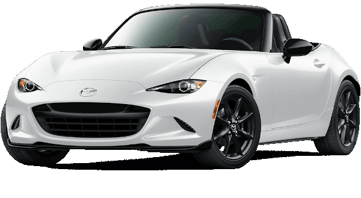

Mazda RX-7
El Mazda RX-7 es un automóvil deportivo producido por el fabricante japonés Mazda Motor Corporation
(マツダ株式会社 Matsuda Kabushiki-gaisha) entre los años 1978 y 2002. Rivalizaba con otros deportivos
asequibles, como el Toyota Supra, el Honda NSX, la línea Nissan Fairlady Z y el Nissan Skyline.
Para encontrar sus origen, tenemos que retrotraernos a otro modelo: el Mazda Cosmo, nacido a mediados
de la década de los 60 y no es que fuera su predecesor per se, pero sí que estableció algunos
de los pilares fundamentales de la saga (como el motor rotativo) y de él, en sus generaciones
posteriores, derivó el RX-7.
Fue a finales de la década de 1970, específicamente en 1978, cuando Mazda debutó al RX-7: un automóvil
deportivo que se distinguió por poseer un motor rotativo, mismo que contribuyó a la marca japonesa
a triunfar en el automovilismo.
Esta influencia del RX-7 en el deporte motor, se hizo sentir en el Mazda 787B con un motor de cuatro
rotores de 710 CV (700HP; 522 kW), que trastornaron el dominio tradicional de los motores de pistón
en 1991 con su victoria en las 24 Horas de Le Mans.
Si bien, el motor rotativo se había hecho presente en modelos anteriores, estos no tuvieron el éxito
esperado, al grado que Mazda pensaba en su extinción. Sin embargo, se hizo un intento más al
incorporarlo
en el RX-7, sin imaginar esta nueva oportunidad que se le dio a esta clase de motor, resultó ser todo
un éxito.
Esta popularidad hizo que el RX-7 obtuviera el título del auto deportivo con motor rotativo más vendido
del mundo, al sumar más de un millón de unidades desde su debut hasta su extinción en 2002. Durante
este lapso, surgieron tres generaciones que conformaron el legado de este emblemático modelo deportivo.
| Características |
Motor: |
Rotativo (2 cilindros rotores) |
| Combustible: |
Nafta |
| Potencia Máxima (CV): |
240 |
| Revoluciones Potencia Máxima (rpm): |
6.500 |
| Torque máximo (Nm): |
294 |
| Revoluciones Torque Máximo (rpm): |
5000 |
| Ubicación: |
Central Delantero Longitudinal |
| Cantidad de válvulas: |
4 |
| Cilindrada: |
1308 c.c. |
| Alimentación: |
Inyección indirecta, 2 Turbocompresores |

Mazda MX - 5
Mazda dio a conocer todos los detalles de la actualización de su pequeño deportivo, hablo claramente del
Mazda
MX-5 también conocido como Mazda Miata. El modelo de la firma japonesa lucirá algunos cambios estéticos
menores,
contará con más potencia un menor peso y más tecnología. A continuación paso a detallarte todos lo cambios.
Comencemos por los motores, el Mazda Miata (MX-5) seguirá ofreciendo dos motores. Por un lado, tenemos el
motor
naftero, cuatro cilindros, 2.0 litros Skyactiv G que ahora brinda 184 CV (24 CV extra) y un torque máximo de
205
Nm (5 Nm extra ) y por otro lado, tenemos el motor naftero, cuatro cilindros, 1.5 litros, Skyactive G que
ahora
brinda 132 CV (1 CV extra) y 152 Nm (2 Nm extra) que se entregan a 4.500 rpm (antes a 4.800 rpm).
Ambos motores, podrán estar asociados a una caja manual o automática secuencial de seis marchas y tracción
trasera y además, prometen incluso una mejor eficiencia que antes, recordemos que los motores Skyactive G se
caracterizan por una impresionante relación de compresión (14:1) similar a la de los autos de competición,
lo
que les permite un menor consumo.
Para lograr el aumento de potencia en el motor 2.0 litros del Mazda Miata (MX-5), se recurrió a bielas y
pistones
más ligeros y resistentes, inyectores de admisión más grandes, una culata más ligera, cigüeñal más ligero,
muelles de válvulas reforzados y modificaron toda la línea de escape para que el auto presuma de un sonido
más
imponente. Gracias a estas mejoras, la línea roja se expandió unas 700 vueltas y toca en las 7.500 rpm y
además,
el peso del auto paso de los 1.120 kg a los 1.050 kg.
| Características |
Motor: |
De combustión |
| Combustible: |
Gasolina |
| Potencia Máxima (CV): |
160 |
| Revoluciones Potencia Máxima (rpm): |
6000 |
| Torque máximo (Nm): |
200 |
| Revoluciones Torque Máximo (rpm): |
4600 |
| Ubicación: |
Central Delantero Longitudinal |
| Cantidad de válvulas: |
4 |
| Cilindrada: |
1998 c.c. |
| Alimentación: |
Inyección indirecta |
Mazda Cosmo Sport
El Mazda Cosmo es un automóvil de gran turismo cupé que fue producido por Mazda desde 1967 hasta 1995. Fue
el
primer automóvil con motor rotativo fabricado en serie. A lo largo de su historia, el Cosmo sirvió como un
vehículo de "halo" para Mazda, y el primer Cosmo lanzó con éxito el motor Mazda Wankel. La última generación
de
Cosmo sirvió como el vehículo insignia de Mazda en Japón, y se vendió como Eunos Cosmo a
través de su división de lujo Eunos en Japón.
Mazda eligió usar el nombre "cosmo", lo que refleja la fascinación cultural internacional con la Carrera
espacial, ya que Mazda quería mostrar el motor rotativo como una visión de futuro, con un enfoque en los
desarrollos futuros y la tecnología.
En 1968, Mazda competió con el Cosmo en una de las pruebas más duras de Europa para demostrar la
confiabilidad
del motor rotativo, el Marathon de la Route de 84 horas en el legendario circuito de Nürburgring en
Alemania. Se
ingresaron dos Cosmos en su mayoría de acciones, junto con otros 58 autos. Un cambio importante en los
motores
10A de los autos fue la adición de un novedoso sistema de admisión de puertos
laterales y periféricos: una válvula de mariposa se cambió de lado a puerto periférico a medida que
aumentaban
las RPM. Los motores estaban limitados a 130 CV para mejorar la durabilidad.
Los autos corrieron juntos en el cuarto y quinto lugar durante la mayor parte de la carrera, pero el auto
japonés
fue retirado con daños en el eje en la hora 82. El otro auto, conducido por belgas, completó la carrera en
el
cuarto lugar general. Esta iba a ser la única salida de carreras para el Cosmo: el próximo Mazda sería un
Familia Rotary (R100).
| Características |
Motor: |
Dual-disk Wankel |
| Combustible: |
Gasolina |
| Potencia Máxima (CV): |
94 |
| Revoluciones Potencia Máxima (rpm): |
7000 |
| Torque máximo (Nm): |
133 |
| Revoluciones Torque Máximo (rpm): |
3500 |
| Ubicación: |
Central Delantero Longitudinal |
| Cantidad de válvulas: |
4 |
| Cilindrada: |
980 c.c. |
| Alimentación: |
Inyección indirecta |